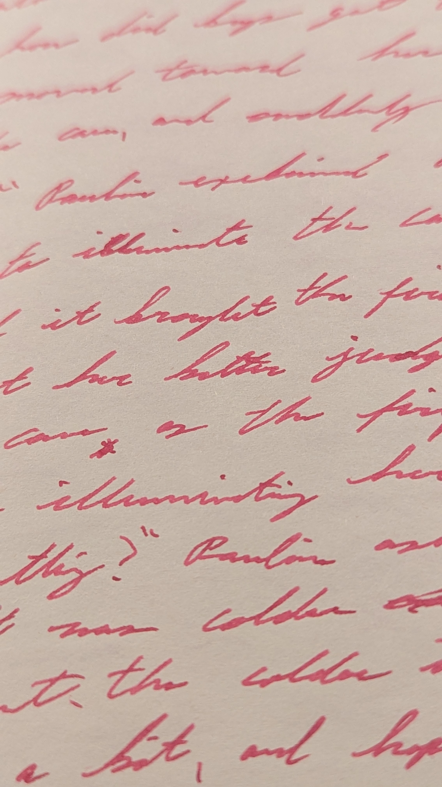

Document Fuchsia
An ink from De Atramentis
I purchased Document Fuchsia from The Goulet Pen Company, and used it during November and December 2024 with a TWSBI ECO Fountain Pen - Dark Sapphire. The ink is a nice, bright fuchsia that I did not experience any smearing despite its smoothness. The ink lasted approximately #### words for daily journaling and fiction writing sessions, and was quite enjoyable. The color is a bit too bright for my taste as I like darker colors, but as that is only a personal preference I will not hold anything against hte ink as color choice is only a preference. As for De Atramentis, I have to say they made a good ink that writes quite well. In the future I would like to try out some of their darker inks. For those who like fuchsia I would absolutely recommend this ink as it writes well and looks good.